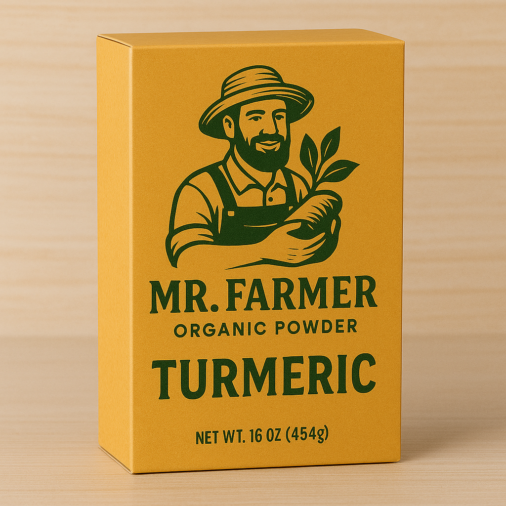
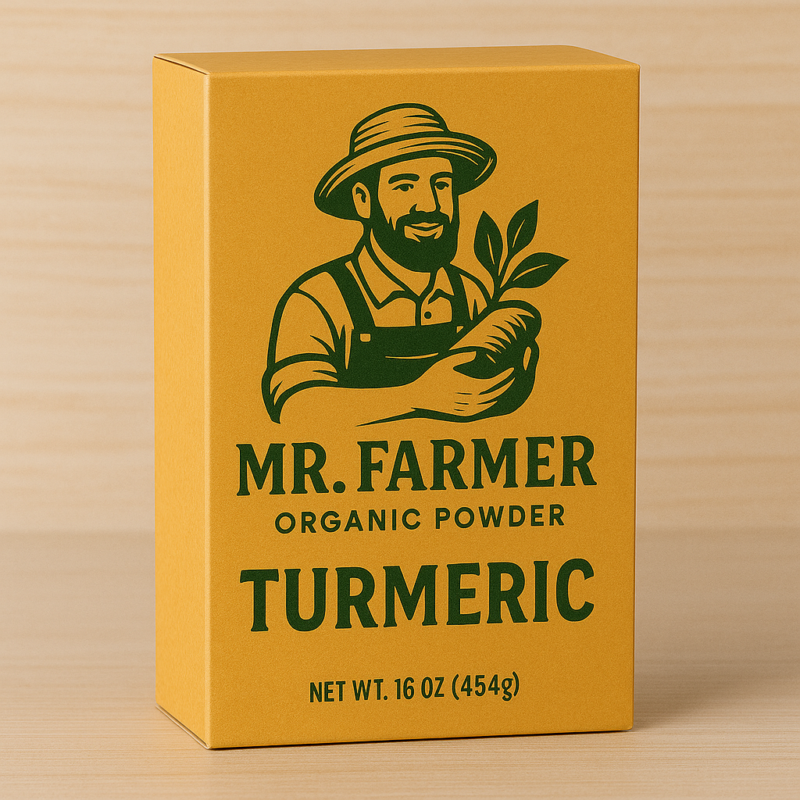

About Mr Farmer Organic
At Mr Farmer Organic, we bring you the finest hand-harvested organic turmeric powder, full of natural goodness.
Why Choose Organic?
Organic farming ensures healthier products and a healthier environment. No chemicals, no additives — only nature’s best!